The following section includes the command line methods of how to use Git and GitHub for source control, this is a more advanced implementation of Git and is not essential for your assignment. But if you wish to know how it works, please read on below.
As mentioned previously, GIT commands and using GitHub can also be achieved by using a command line.
For the purpose of this tutorial, we are going to use PowerShell as our CLI to use GIT, but most CLIs will work just as well. To access PowerShell from windows, press the Start/Windows button and perform a search for the PowerShell using the search bar at the bottom of the screen. (If the search bar does not appear begin typing with the start menu open and the search will start automatically)
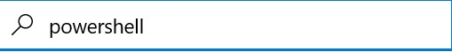Then application for the command prompt should appear at the top of the window, click on this to open the PowerShell application.
If correctly done the PowerShell window should open and you should see a screen that contains a flashing white cursor.
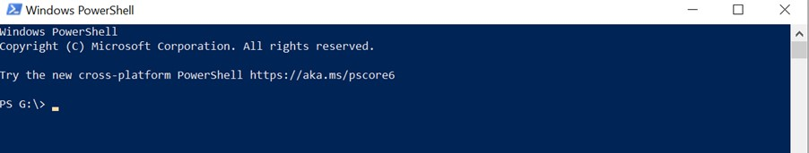If you are using a university machine, Git should already be installed and ready to use on your system. If you are not, and you haven't installed it previously, then you will need to install it yourself before you can begin to use Git in the command line.
To check if you already have Git installed, in PowerShell write the command:
git version
If PowerShell information about your Git install, then you currently have access to use Git on your PC. If it returns the following error:
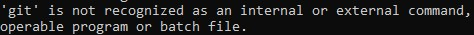Then you need to ensure that Git is installed on your machine. If you already have a valid Git install you can progress to the “Creating a repository” page. Otherwise:
To download Git, visit the following link: https://git-scm.com/download/win
Select the option at the top of the page to download the latest version of git and wait for the download to finish.
When the download has completed run the installer and install the software using your desired preferences. When you reach the PATH environment window it is recommended that you keep it to the default value provided. Choosing to run git from the command line and third-party software.
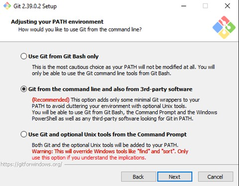You should also choose the option to use the bundled OpenSSH.
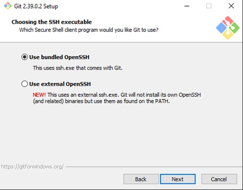And select to use the OpenSSL library for your HTTPS connections.
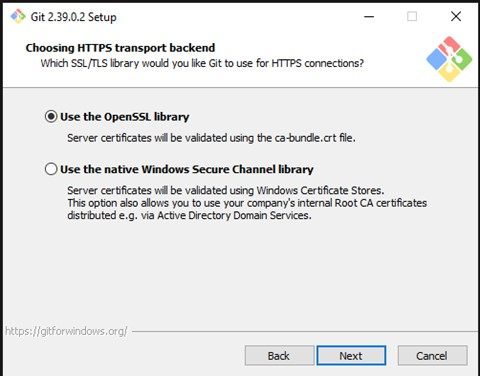Select that you wish to checkout Windows style in the next window.
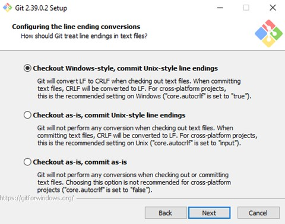In the next window select that you wish to use the default windows console window.
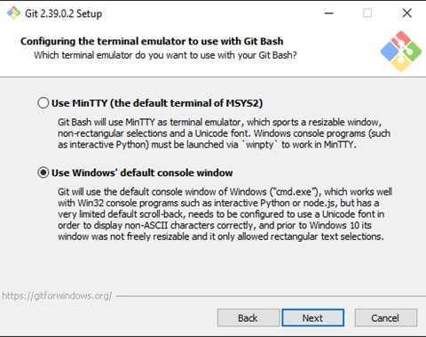Keep the “Git pull” data to its default behaviour.
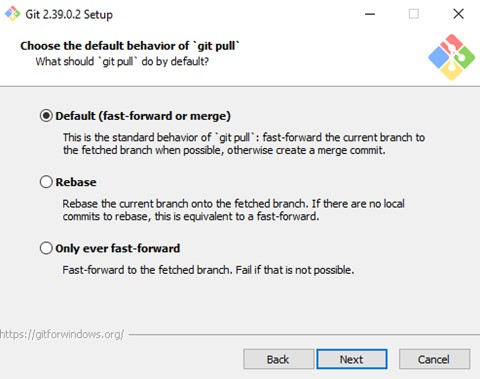Keep the Git credential manager at its default value.
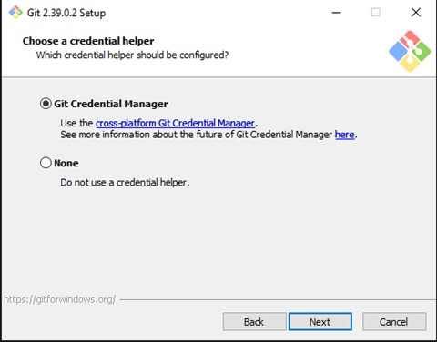Keep enable file system caching turned on.
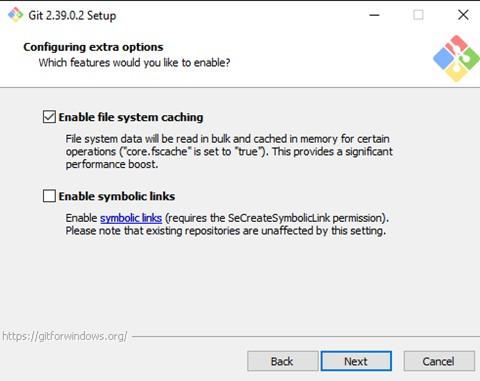Leave both experimental features off.
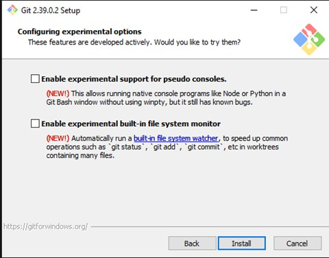Finally, click install to start the installation process
.Reopen the command prompt and type git, if you get a response like the one below GIT has been installed correctly